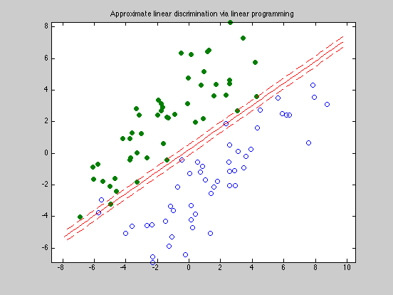

Figure 8.10: Approximate linear discrimination via linear programming
n = 2;
randn('state',2);
N = 50; M = 50;
Y = [1.5+0.9*randn(1,0.6*N), 1.5+0.7*randn(1,0.4*N);
2*(randn(1,0.6*N)+1), 2*(randn(1,0.4*N)-1)];
X = [-1.5+0.9*randn(1,0.6*M), -1.5+0.7*randn(1,0.4*M);
2*(randn(1,0.6*M)-1), 2*(randn(1,0.4*M)+1)];
T = [-1 1; 1 1];
Y = T*Y; X = T*X;
cvx_begin
variables a(n) b(1) u(N) v(M)
minimize (ones(1,N)*u + ones(1,M)*v)
X'*a - b >= 1 - u;
Y'*a - b <= -(1 - v);
u >= 0;
v >= 0;
cvx_end
linewidth = 0.5;
t_min = min([X(1,:),Y(1,:)]);
t_max = max([X(1,:),Y(1,:)]);
tt = linspace(t_min-1,t_max+1,100);
p = -a(1)*tt/a(2) + b/a(2);
p1 = -a(1)*tt/a(2) + (b+1)/a(2);
p2 = -a(1)*tt/a(2) + (b-1)/a(2);
graph = plot(X(1,:),X(2,:), 'o', Y(1,:), Y(2,:), 'o');
set(graph(1),'LineWidth',linewidth);
set(graph(2),'LineWidth',linewidth);
set(graph(2),'MarkerFaceColor',[0 0.5 0]);
hold on;
plot(tt,p, '-r', tt,p1, '--r', tt,p2, '--r');
axis equal
title('Approximate linear discrimination via linear programming');
Calling SDPT3: 203 variables, 100 equality constraints
------------------------------------------------------------
num. of constraints = 100
dim. of linear var = 200
dim. of free var = 3 *** convert ublk to linear blk
*******************************************************************
SDPT3: homogeneous self-dual path-following algorithms
*******************************************************************
version predcorr gam expon
NT 1 0.000 1
it pstep dstep p_infeas d_infeas gap mean(obj) cputime
-------------------------------------------------------------------
0 0.000 0.000 5.0e+00 5.1e+00 2.1e+02 5.000000e+01 0:0:00 chol 1 1
1 1.000 1.000 2.7e+00 2.8e+00 2.2e+02 7.209176e+01 0:0:00 chol 1 1
2 0.926 0.926 6.6e-01 6.8e-01 6.1e+01 2.761659e+01 0:0:00 chol 1 1
3 0.794 0.794 2.1e-01 2.1e-01 2.1e+01 1.489751e+01 0:0:00 chol 1 1
4 0.558 0.558 1.5e-01 1.6e-01 1.8e+01 1.343433e+01 0:0:00 chol 1 1
5 0.876 0.876 8.4e-02 8.7e-02 1.4e+01 1.131771e+01 0:0:00 chol 1 1
6 0.449 0.449 7.2e-02 7.4e-02 1.1e+01 1.014891e+01 0:0:00 chol 1 1
7 0.644 0.644 6.2e-02 6.4e-02 1.1e+01 9.720256e+00 0:0:00 chol 1 1
8 0.743 0.743 5.1e-02 5.2e-02 9.8e+00 9.100924e+00 0:0:00 chol 1 1
9 1.000 1.000 2.9e-02 3.0e-02 5.6e+00 7.866734e+00 0:0:00 chol 1 1
10 1.000 1.000 1.1e-02 1.1e-02 2.2e+00 6.857502e+00 0:0:00 chol 1 1
11 1.000 1.000 3.5e-03 3.6e-03 7.6e-01 6.420757e+00 0:0:00 chol 1 1
12 1.000 1.000 1.7e-03 1.7e-03 3.6e-01 6.271626e+00 0:0:00 chol 1 1
13 0.923 0.923 2.0e-04 2.1e-04 4.3e-02 6.163494e+00 0:0:00 chol 1 1
14 0.987 0.987 3.7e-06 3.8e-06 5.7e-04 6.148842e+00 0:0:00 chol 1 1
15 0.997 0.997 9.1e-08 9.3e-08 1.5e-05 6.148576e+00 0:0:00 chol
SWM to ill-conditioned, switch to LU factor. lu 1 1
16 1.000 1.000 1.5e-08 1.7e-09 3.0e-07 6.148570e+00 0:0:00 lu 1 1
17 1.000 1.000 1.2e-09 2.9e-11 5.8e-09 6.148569e+00 0:0:00
Stop: max(relative gap, infeasibilities) < 1.49e-08
-------------------------------------------------------------------
number of iterations = 17
primal objective value = 6.14856943e+00
dual objective value = 6.14856943e+00
gap := trace(XZ) = 5.82e-09
relative gap = 8.14e-10
actual relative gap = -1.44e-11
rel. primal infeas = 1.19e-09
rel. dual infeas = 2.89e-11
norm(X), norm(y), norm(Z) = 8.9e+01, 2.4e+00, 1.0e+01
norm(A), norm(b), norm(C) = 7.4e+01, 1.0e+01, 1.0e+01
Total CPU time (secs) = 0.5
CPU time per iteration = 0.0
termination code = 0
DIMACS: 1.2e-09 0.0e+00 2.9e-11 0.0e+00 -1.4e-11 4.4e-10
-------------------------------------------------------------------
------------------------------------------------------------
Status: Solved
Optimal value (cvx_optval): +6.14857
